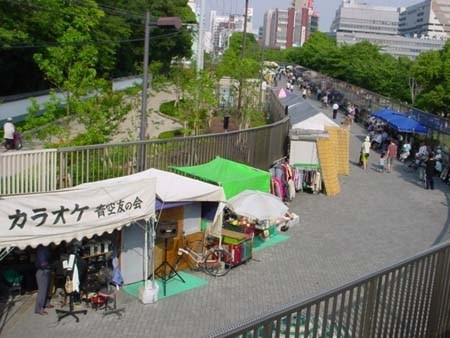
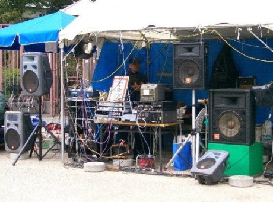

百式サクセション＞note
変わりゆく街のなかで、青空カラオケで人々が交錯する。
「都市」が老いた人々を見つめる眼差しとはー
百は百円玉の「百」です。
サクセションは、日本語に訳すと相続。
百円玉とは、「青空カラオケ」で一曲歌うために必要なお金です。
主人公の「ナオミ」ばあさん（自分に莫大な財産があると妄想している）が、自分の人生を「１曲」歌うための百円玉を使います。
その百円玉が、相続されていくように巡り巡っていきます。
舞台となる「青空カラオケ」にいつからいるのかわからないおばあちゃんです。
猫を可愛がるので「猫屋敷ナオミ」と呼ばれたり、莫大な財産があるというので「陛下」と呼ばれたりしてはいるが、どこからやってきたのかわからない。
いつの間にかいてよく歌っている。そのちょっと耄碌したようなおばあちゃんが歌う「１曲百円」の妄想の中に、いろいろな風景が浮かび上がります。
お母さんを探す女の姿、各地で目撃された老婆についての証言、祖母が亡くなったときの思い出など…。
実際に、それが「ナオミ」おばあさん自身の話なのか、「ナオミ」おばあさんが体験した話なのか、また別人についての話なのか混然としてくるうちに、都市が老人を見つめる視点というのが立ち上がってくる構造です。
おばあちゃん、娘、孫という母から子に相続していくということが作品の一つの要素となっています。作品のモチーフとして考えたリア王は「遺産相続」も一つの要素なのですが、母親が一切でてきません。なので逆に母親の目線で捉えてみることにしました。
そこで「母を探す娘」と「孫を探す老婆」を登場させました。
作中ではこれを「ナオミ」おばあさんが二役で演じます。
血のつながりのある他者にたいする物質的な相続と、この人の妄想の中で自分の内面にある娘、孫的な要素にたいする精神的な相続とが見えてきます。
ここがリア王を女性に置き換えたことでみえてくると面白いと思っています。
青空カラオケも、普段のカラオケもそうなのかもしれないけれど、
自分たちの人生を歌に仮託している部分がある感じがするんです。
ここまで、生きてきて歌と結びついているイメージとか、
自分の来し方行く末みたいなものを歌うっていうことで、
憂さをはらすじゃないけれど、気持ちよくなるという場所。
「青空カラオケ」はそれを青空の下でやる。
そのために、なけなしの百円を払うっていう感じ。
作中で実際に歌う場面は少なくて、歌っているときに見ているこのイメージを劇として立ち上げてみました。

「ナオミ」の妄想の中に浮かび上がる様々な風景を
モノローグで語りつないでいくのですが、
それを語るために「防犯カメラの視点」をいれています。
「防犯カメラ」＝「都市生活者が他者をみる視線」だと思うんです。
防犯カメラの映像は、つなぎ合わせても、誰かがどこをたどったという情報はわかったとしても、
その人の物語が見えるわけではない。
その断片と断片の間の空白の時間を想像することで、多面的に都市が老人を見つめる視点を表せたらと思っています。
高齢化社会になり、どんどん年をとっていくわけですけども、年をとることを否定的に書きたくはなくて、乱暴な言い方をすれば、老いた人の生き様をあっけらかんと描いてみたいと思いました。
劇中、進化について語るシーンがあります。
進化とは突然変異ですけども、我々は進化しなくても生きていけるように環境を作ってきたわけです。
でも、現代のこの状況を考えるとそろそろ進化してもいい頃ではないかということです。
つまり、老いを一つの進化として考えてみました。
１９７０年頃に、大阪市立美術館の前に、「エレクトーンの先生」と呼ばれる今は伝説になってる人が現れて、エレクトーン１本でカラオケをやったというのが始まりらしいです。
そこに人が集まりだして、そのエレクトーンの先生が２年ぐらいで亡くなったのを機に、
引き継いでカラオケをやろうかってことで、機材などを持ち込んで、徐々に増えていって
最終的には１０店舗弱はあったようです。
繁盛している店では従業員も雇っていたようです。
これが、２００３年に行政代執行で撤去になってしまった。
もう１２年になりますが、あのときあそこにいた人たちはいったいどこにいってしまったのだろうかというのが、いまの天王寺公園からは想像できません。
園内にある高低の様々なフェンスに疑問を感じる人がいれば、それはその名残です。
※ 1 青空カラオケ
大阪天王寺公園の敷地内で無許可にてカラオケ屋台を営む業者、およびそのようなカラオケ店。ホームレスの憩いの場となっていたが、一方で、迷惑に感じる住民もおり、2003年12月大阪市により、一部の業者が強制撤去（行政代執行）された。
作品を執筆するにあたって、いつもは場所が先にあるのですが、
今回はシェークスピアの「リア王」をモチーフに書いてみたいというのが先にあったんです。
リア王といえば有名な「荒野」の場面。
その荒野を現代に置き換えることはできないだろうか。と考えて思いついたのが、
天王寺公園という場所と「青空カラオケ」です。
そこをベースにリア王のテーマの一つである「遺産相続」と「高齢者問題」を描いてみようと思いました。
※ ２ リア王
シェイクスピア作の悲劇。5幕で、1604年〜1606頃の作。長女と次女に国を譲ったのち二人に事実上追い出されたリア王が、末娘の力を借りて、二人と戦うも破れる。王に従う道化に悲哀を背負わせ、四大悲劇中最も壮大な構成の作品との評もある。
僕が「リア王」と「青空カラオケ」に共通すると思う「ジェントリフィケーション」という言葉があります。
聞きなれない言葉で、僕もこの言葉を調べていくうちに知ったのですが、
乱暴に定義してしまえば、労働者階級が住んでいた地域に、富裕層や中産階級が流入し、元々住んでいた労働者階級が排除されてしまうことをいいます。
土地を囲いこみ追い出すこと。まさに「青空カラオケ」の顛末はそれに該当しますし、
「リア王」もジェントリフィケーションする側からされる側へと転落していったといえます。
松本雄吉さん（※3）の紹介で、大阪府立大学の酒井先生（※4）にお目にかかって、いろいろお話を伺い、撤去の顛末を追ったドキュメンタリー映像「公園」も見せていただきました。
その中に面白いやり取りがあったのですが、
「４０年もここで歌っているのに、いつの間にか、俺らの存在が迷惑だと言われるようになった。公園っていうのは誰のもんやねん。」
と、市職員と青空カラオケやってる人たちが、言い合いになるんですけど、
「あなたたちのものではありません。」
「ほな、誰のもんやねん」
「公のものです」
という押し問答になるんですよね。
自分たちが楽しく過ごしていた場所が、彼らにとっては荒野になってしまうということです。
リア王が荒野へさまよい出たときに、自分の身を呪い嘆く言葉を
青空カラオケでマイク片手にガナリ歌う歌声と重ねてみました。
いつも戯曲を書くとき場所から手がかりを見つけることが多いので、順番がいつもと（※5）逆です。
「サブウェイ」は都市機構、「タイムズ」も、都市機構から初めて風景、「PORTAL」も地図から発想しましたし、「ガベコレ」も、風変わりなゴミ処理場のある風景と都市計画みたいなところからの発想でしたから。
※ ３ 松本雄吉（1946〜2016）
劇団維新派主宰。「喋らない台詞、 踊らない踊り、歌わない音楽」をコンセプトとした独自のスタイルや、場所との交感 を大切に、劇場を劇団員自らの手で建設する手法は国内外から注目を集め、国内にとどまらず、世界へ演劇作品を発表し続けた。林慎一郎とは、「PORTAL」で、演出としてタッグを組んだ。
日本の社会学者 大阪府立大学准教授。専門は社会思想史。早稲田大学大学院文学研究科修士課程終了。大阪女子大学講師。2012年、「通天閣 新・日本資本主義発達史」で第34回サントリー学芸賞受賞。
撤去にいたった原因については、いろいろな説がまことしやかに言われています。
暴力団がバックになっている店舗があったとか、
公園で営業するのは黙認していたが一角を占有して営業を始めたとか、
変わったものでは動物園のコアラが眠れないなんて説もあったようですが、
ひっくるめて「迷惑だ」に収斂していったみたいです。。
最終的には道路整備の名のもとにの撤去だったようです。
行政代執行があってから、天王寺公園は有料化されました。（現在は無料）
１５０円払わないと入場できない公園だったのですが、未だあの有料化はなんであったかわからないですね。
有料になったときに、JRのほうから来ると天王寺公園を迂回しないと美術館にいけないので、
みんなホームレスの暮らすエリアに迷い込むので、
ホームレスの人たちが、「美術館⇒」っていう案内を作って出したり、案内してあげたりしていたという話も伺いました。
撤去から１２年経った今、くしくも天王寺公園から少し南にいった山王商店街の中にカラオケ居酒屋が乱立していて、最近はそこからの歌声に「迷惑」の声も上がっているようです。
反ジェントリフィケーション情報センターhttp://cityriots.exblog.jp/24012356/

調べていく過程で、撤去の顛末や青空カラオケ成立の経緯など、
随分と面白いことがありました。しかし作品としてそれを盛り込んでいくには、
ある種ドキュメンタリー作品として作る方向に舵を切る必要があるなと思い悩みましたが、
「ナオミ」というリア王を模した老婆の物語を重視することにしました。
ですので、行政代執行がどうであったとか、いつどういうことがおきて、誰がどういうことにまきこまれたとか、ことさらに表に出すのはやめました。
どう入れるかというところを、ちょっと苦労はしましたが、基本的にはすっきりしたと思います。
演劇なので、空間造形や、動きで示すということはできると思っています。
単純に舞台を片づけるという行為だけでも、なにかそれを想像できるような方法を考えようと思っています。
シェークスピアの悲劇のなかでも、もっともひどい話、とりつくしまがないくらいひどい話ですよね。
他には、恋愛とか、一応、勧善懲悪的なところがあるのですが、
老いた頑迷な王様がさらに老いぼれて狂って死んじゃったという・・・。
他と比べて、リア王はどん底な感じがすごい。
逆に都市的なものを感じたというか、血肉の感情とかではない、
自分たちが作り出した制度であったりとか、計画した物によって支配され、冷酷に振り回されているような感じがしたので。